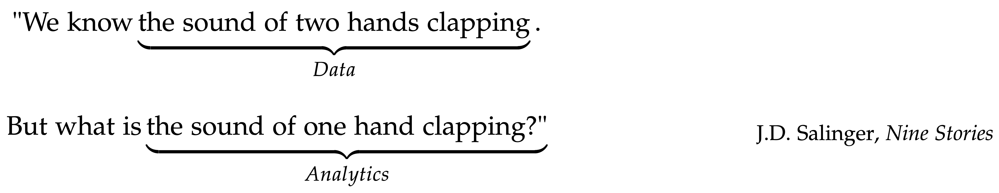

This book is suitable for an introductory course of data analytics to help students understand some main statistical learning models, such as linear regression, logistic regression, tree models and random forests, ensemble learning, sparse learning, principal component analysis, kernel methods including the support vector machine and kernel regression, etc. Data science practice is a process that should be told as a story, rather than a one-time implementation of one single model. This process is a main focus of this book, with many course materials about exploratory data analysis, residual analysis, and flowcharts to develop and validate models and data pipelines.
There are \(10\) chapters. Except for Chapter 1, which gives an overview of the book, each chapter will introduce two or three techniques. For each technique, we will highlight the intuition and rationale behind it. We then articulate the intuition, use math to formulate the learning problem, and present the full version of the analytic formulation. We use R to implement the technique on both simulated or real-world datasets, present the analysis process (together with R code), show the dynamics in the analysis process, and comment on the results. Some Remarks are also made at the end of each chapter to enhance understanding of the techniques, reveal their different natures by other perspectives, reveal their limitations, and mention existing remedies to overcome these limitations.
There are three unique aspects to this book.
First, instructors will find many small datasets (i.e., consisting of 5—10 data points of 2—4 variables) in this book for models to be manually implemented by students using step-by-step process. The idea is to let students work out pencil solutions and then compare them with results obtained from established R packages. For example, a dataset with \(3\) data points and \(2\) predictors is used to illustrate how the shooting algorithm of LASSO could be implemented both on paper and in the R package glmnet. Another example is that, to understand the concept of the support vector machine (SVM), we use a dataset with \(4\) data points and \(2\) predictors to illustrate how the dual formulation of SVM could be solved manually. Furthermore, by this small dataset we help students see the connection between the computational algorithm with the geometric pattern of the data, i.e., the correspondence between the numeric solution with the so-called support vectors clearly visible in the scatterplot of the data.
Second, instructors will find graphical illustrations to explain some methods to students. These angles exploit connections between the methods; for example, the SVM is illustrated as a neural network; the kernel regression is introduced as a departure from the mindset of global models; and the logistic regression model is introduced as a few creative twists of the modeling process to apply the linear method for a binary classification problem, etc. On a larger scale, the connection between classic statistical models with machine learning algorithms is illustrated by focusing on the understanding of the iterative nature of the computational algorithms enabled by computers. We help students develop an eye for a method’s connection with other models that only appear to be different. This understanding will help us know a method’s strength and limitations, the importance of the context, and the assumptions we have carried in our data analysis.
Third, it is important for students to understand the storytelling component of data science. Data scientists tell stories every day. A story conveys a message, and a skillful data scientist must have the experience that the message changes its shape and meaning, depending on which model is used, how the model is tuned, or what part of the data is used. And some models have assumed a particular storytelling mode or structure. For example, we found hypothesis testing is a difficult concept for students to understand its essence, because it is a “negative” reading of data. It is not to translate what the data says, but to seek evidence from data against the null hypothesis we will need to come up with first. Examples as such will be found in the book to help students have a larger and deeper view of what they will learn.
